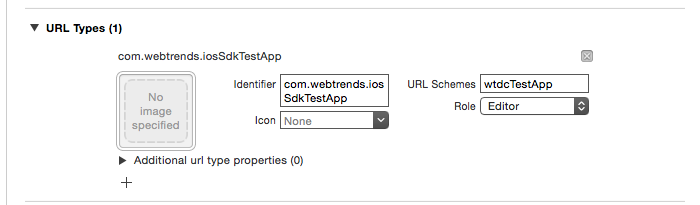

Hybrid Events Guide Document
The Webtrends SDK includes components that allow you pass sessions back and forth between the app, and a website opened in Safari. This guide shows the two methods of data transfer: app to browser, and browser to app.
Requirements
In order to accept events back from a webpage, your app will need to implement a custom URL scheme, described below.
App To Browser
This section describes how to a launch a URL from a native app while maintaining user and session information between the Webtrends SDK in the native application and the Webtrends JavaScript tag on the target page.
It is assumed that the target page is already tagged with the Webtrends JavaScript tag and the native app has implemented the Webtrends iOS SDK. For more information about these topics see:
Step 1 – Tag your site with the id_receiver plug-in
Add the webtrends.id_receiver.js plugin to the JavaScript tag configuration on the target page.
window.webtrendsAsyncInit = function () {
var dcs = new Webtrends.dcs().init({ dcsid: "<your_dcsid>",
timezone: "<your_timezone>", plugins: {
id_receiver: {
src: "//s.webtrends.com/js/webtrends.id_receiver.js"
}
}
});
dcs.track();
}
Step 2 — Open the website from your application.
Use the Webtrends helper method to load the URL. This will append user and session information to the URL which the JavaScript plug-in will parse and use for its configuration.
let url = NSURL(string: "https://yourdomain.com/")
WTDataCollector.sharedCollector().openURL(url)NSURL *url = [NSURL URLWithString:@"http://yourdomain.com/"];
[[WTDataCollector sharedCollector] openURL:url];Browser to App
The Webtrends 10.2 Javascript tag and the ID Broadcaster plug-in enable you to send visitor data from your website to your mobile application.
To track visitors from your website to your mobile application, you need:
- The Webtrends Event Tracking SDK implemented in your iOS application (see the Getting Started Guide)
- The Webtrends 10.2 JavaScript tag, available at: http://s.webtrends.com/js/webtrends.js
- The Webtrends ID Broadcaster plug-in, available at: http://s.webtrends.com/js/webtrends.id_broadcaster.js
Step 1 – Register a custom URL scheme
Register a custom URL scheme for your app by opening its Info.plist file and adding values for URL identifier and URL Schemes.
In your application’s Info.plist, create a new url type as shown in the screenshot below (or you can use an existing one, if you’ve already got one). For the purposes of this guide, we’ve used wtdcTestApp, but you’ll want to create your own.

Step 2 – Tag the Website
Tag the website with the Webtrends JavaScript tag, using the id_broadcaster plug-in.
Visitor data is added to links that match a list of element IDs or a list of domains, matched against the href of the link.
In the following code snippet, make sure you replace the wtdcTestApp URL with the scheme you created in step 1.
<!DOCTYPE HTML>
<html><head>
<title>Hybrid Test website</title>
<script type="text/javascript">
window.webtrendsAsyncInit = function () {
var dcs = new Webtrends.dcs()
.init({
dcsid: "dcsx999x900000xxxxxxx4xx9_1234", //Replace with your DCSID
timezone: -7,
plugins: {
id_broadcaster: {
src: "webtrends.id_broadcaster.js",
//List of element ids that link to your iOS application.
appids:["native"],
}
}
})
.track();
};
(function(){
var s=document.createElement("script"); s.async=true; s.src="webtrends.js";
var s2=document.getElementsByTagName("script")[0]; s2.parentNode.insertBefore(s,s2);
} ());
</script>
</head>
<body>
<div>
<a id="native" href="wtdcTestApp://my/deep/link" >Launch Test app w/ id</a>
<br />
<a href="http://www.webtrends.com">Other Links...</a>
<br />
</div>
</body></html>
Step 3 – Handle the openURL method
In your App Delegate, implement the following method if you haven’t already:
func application(application: UIApplication, openURL url: NSURL, sourceApplication: String?, annotation: AnyObject?) -> Bool {
// Your custom code here
return true;
}-(BOOL)application:(UIApplication *)application openURL:(NSURL *)url sourceApplication:(NSString *)sourceApplication annotation:(id)annotation
{
// Your custom code here
return YES;
}If you have automatic events disabled (see the Automatic Events Guide), you’ll also need to add the following line of code at some point in the previous App Delegate method:
WTDataCollector.sharedCollector().transferSessionWithURL(url)[[WTDataCollector sharedCollector] transferSessionWithURL:url];